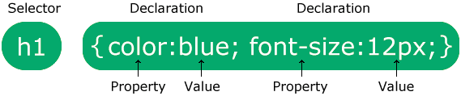

CSS (Cascading Style Sheets)
Esta página foi estilizada com CSS!
CSS = Cascading Style Sheets (folhas de estilo em cascata). Ele economiza muito trabalho, porque pode controlar o layout de várias páginas da Web ao mesmo tempo.
Com CSS é possível controlar a cor, a fonte, o tamanho do texto, o espaçamento entre os elementos, como os elementos são posicionados na tela, quais imagens ou cores de fundo usar, diferentes exibições para cada dispositivo e tamanho de tela, e muito mais!
"Em cascata" significa que um estilo aplicado a um elemento pai também será aplicado a todos os elementos filhos dentro do pai. Então, ao definir a cor do texto do corpo como "blue", todos os cabeçalhos, parágrafos e outros elementos de texto dentro do corpo também receberão a mesma cor, a menos que seja especificado algo diferente.
Uma regra de CSS consiste de um seletor e um bloco de declarações.

O seletor aponta para o elemento HTML que se deseja estilizar.
O bloco de declaração contém uma ou mais declarações, separadas por ponto-e-vírgula.
Cada declaração inclui um nome de propriedade do CSS e um valor, separados por dois-pontos.
As várias declarações de CSS são separadas por ponto-e-vírgula, e os blocos de declarações são envoltos em chaves.
Ordem do estilo em cascata
Qual estilo será usado quando houver mais de um estilo especificado para um elemento HTML?
Todos os estilos na página serão aplicados em "cascata" em uma nova folha de estilo "virtual" de acordo com as regras a seguir, respectivamente:
- Estilo da linha (dentro do elemento HTML)
- Folhas de estilo externa e interna (na área
<head>) - Padrão do navegador
Assim, o estilo da linha tem a prioridade mais alta e substituirá as folhas de estilo externa e interna e os padrões do navegador.
Há 3 maneiras de usar o CSS em documentos HTML:
- Inline, usando o atributo
styleem elementos HTML - Internal, usando o elemento
<style>na seção<head> - External, usando um elemento
<link>para vincular um arquivo CSS externo
CSS Inline
O CSS inline (em linha, aplicado ao elemento) é usado para aplicar um estilo único a um único elemento HTML. Ele usa o atributo style de um elemento HTML. O cabeçalho e o parágrafo coloridos abaixo são exemplos de "inline".
Cabeçalho em blue
Parágrafo em Golden Rod com letra tamanho 15pt.
Observação: ao usar valores numéricos, não se deve separar o número da unidade com um espaço. O correto é font-size: 15pt e não font-size: 15 pt.
CSS Internal
O CSS internal (interno) é usado para definir um estilo para uma única página HTML. Ele é definido na seção <head> de uma página HTML, com um elemento <style>.
O fundo da página em powderblue é o Internal, definido na seção "head".
CSS external
O CSS external (externo) é um arquivo de folha de estilo, com extensão .css, usado para definir o estilo de várias páginas HTML ao mesmo tempo. Para tanto, é necessário usar o elemento <link> na seção <head> de cada página HTML. Esse arquivo CSS não deve conter HTML.
Consultar style.css
É possível fazer comentários no arquivo de CSS usando os caracteres /* e */. Consulte o arquivo style.css para ver alguns.
Cores, fontes e tamanhos no CSS
As seguintes propriedades CSS definem, em ordem, a cor do texto, a fonte e o tamanho da fonte: color, font-family e font-size.
A propriedade border define uma borda ao redor de um elemento HTML. P.ex.: border: 2px solid powderblue;
A propriedade padding define um espaço entre o texto e a borda.
A propriedade margin define um espaço fora da borda.
O elemento <link> aceita o caminho do arquivo CSS localmente (ou em um servidor) ou um URL.
W3.CSS é um framework de CSS moderno que oferece suporte para desktops, tablets e dispositivos móveis por padrão. Ele é menor e mais rápido que outros frameworks de CSS e foi projetado para trabalhar independentemente do jQuery ou de outras bibliotecas JavaScript.
Outro framework muito utilizado é o Bootstrap.
Novos frameworks estão surgindo conforme a necessidade. Alguns frameworks recomendados: Less, Sass/Scss, Stylus, PostCSS
e Tailwind.Tutorial em vídeo sobre CSS no HTML
Lista explicativa de todas as propriedades de CSS
O modelo de caixa
O modelo de caixa é uma definição fundamental do CSS. Entender como ele funciona, como é afetado por outros aspectos do CSS e, mais importante, como ele os controla. pode ajudá-lo a gerar um CSS mais previsível.
É importante lembrar que TUDO que é exibido pelo CSS é uma caixa, mesmo que seja apenas texto ou que tenha um border-radius que a faça parecer um círculo.
As caixas apresentam diferentes comportamentos com base no valor definido para a propridade display, suas dimensões e seu conteúdo. Esse conteúdo pode ser apenas texto ou mais caixas geradas pelos elementos filhos. De qualquer forma,o conteúdo afeta o tamanho da caixa por padrão.
Você pode controlar isto com o tamanho extrínseco, ou pode usar o tamanho intrínseco para deixar que o navegador decida o que fazer com base no tamanho do conteúdo da caixa.
Isso faz com que a propriedade overflow não seja tão usada pelo navegador, já que a caixa é redimensionada de acordo com o conteúdo.
Lembre-se: o tamanho intrínseco é o comportamento padrão do navegador e geralmente proporciona mais flexibilidade do que o tamanho extrínseco.
.png)
Uma propridade definida pelos navegadores define a exibição padrão de uma caixa. Por exemplo, normalmente o valor de exibição padrão de um elemento <div> é block, o de <li> é list-item e o de <span> é é inline.
Um elemento com o valor inline tem uma margem de bloco, mas os outros elementos não respeitam isso. Com inline-block, os outros elementos passam a respeitar a margem de bloco, mas o primeiro elemento mantém a maioria dos mesmos comportamentos que tinha quando ainda era um elemento inline. Um item de bloco preenche o espaço restante disponível na linha por padrão, enquanto os elementos inline e inline-block ficam tão grandes quanto seu conteúdo.
A folha de estilo do "user-agent" do navegador também define a propriedade box-sizing, que informa à caixa como calcular seu tamanho. Por padrão, todos os elementos têm o seguinte estilo: box-sizing: content-box;. Isso significa que ao definir as dimensões de largura e altura, essas dimensões são aplicadas à caixa de conteúdo. Se, posteriormente, você definir padding e border, esses valores serão adicionados ao tamanho da caixa de conteúdo. Por exemplo, se tivermos uma declaração como a seguinte:
.my-box {
width: 200px;
border: 10px solid;
padding: 20px;
}
a caixa terá 260px de largura total: 200px (largura definida para a caixa) + 20px (borda esquerda) + 20px (borda direita) + 10px (padding à esquerda) + 10px (padding à direita) = 260px. Ao mudar a propridade box-sizing para border-box, a largura da caixa se mantém em 200px, porque o padding e a border são empurrados para dentro.
*,
*::before,
*::after {
box-sizing: border-box;
}
A regra de CSS acima seleciona todos os elementos no documento e todos os pseudo-elementos ::before e ::after e aplica a propriedade box-sizing: border-box. Assim, todos os elementos usarão esse modelo de caixa alternativo.
Como o modelo alternativo pode ser mais previsível, os desenvolvedores geralmente adicionam esta regra a redefinições e normalizadores, como este.